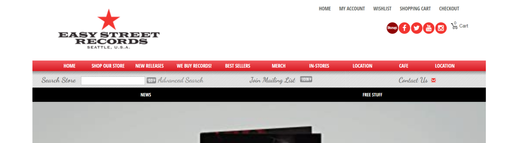
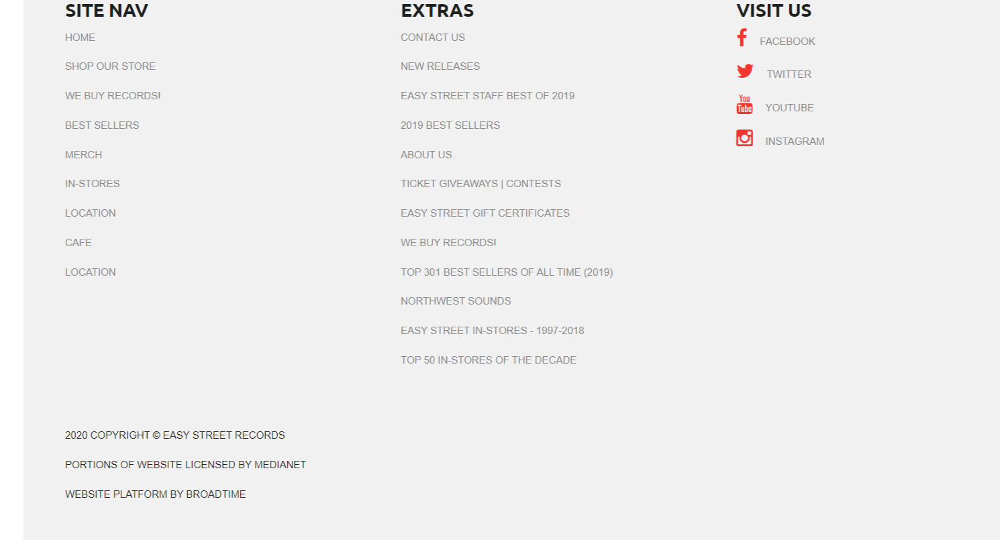

The site I chose to analyze is Easy Street Records website. This is a site for people who are looking for music. Whether they are looking to buy a cd, a record, an MP3 or if you are just looking for music news. This website holds a lot of information. It can take hours and hours to cover all the contect of the site but the way it is organized makes it very easy to find what you are looking for or discover something new.
Are navigational elements clear?
The navigational elements are very clear and are consistent on each page. Here is an example of the menu at the top of the page. There are a lot of tabs and links but they are very well organized and easy to find.  The whole website has a lot of content. I think they do a great job of organizing and showcasing it. It takes a while but once you get to the bottom of the page there are a lot of links but I don't think it is too crowded 
Do I know what I'm looking at on each page?
Easy Street Records has 9 different tabs (home, shop our store, new releases, we buy records, best sellers, merch, in-stores, location and cafe). Each page has a very noticable heading letting you know which tab you clicked on. So if you accidentally clicked on the wrong tab you know right away. The only tab that might be confusing is the shop our store tab. This tab is a drop down tab with 26 options. The shop is divided into genres just like the store is except that is a little too much for a website. The drop down menu is longer than the content of the page.
Can I see there is more content if I scroll down?
Most of the pages don't contain a lot of content therfore there is not a lot scrolling to be done. However, the home page and the shop page are very long. Below is a video of me scrolling through the home page. It takes me 23 seconds to get from the top of the page to the bottom of the page. In my opion that is just too much information on a home page.